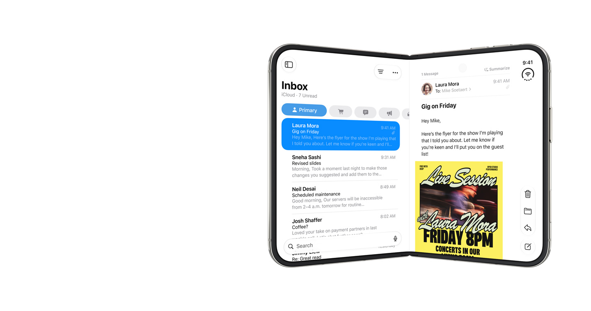
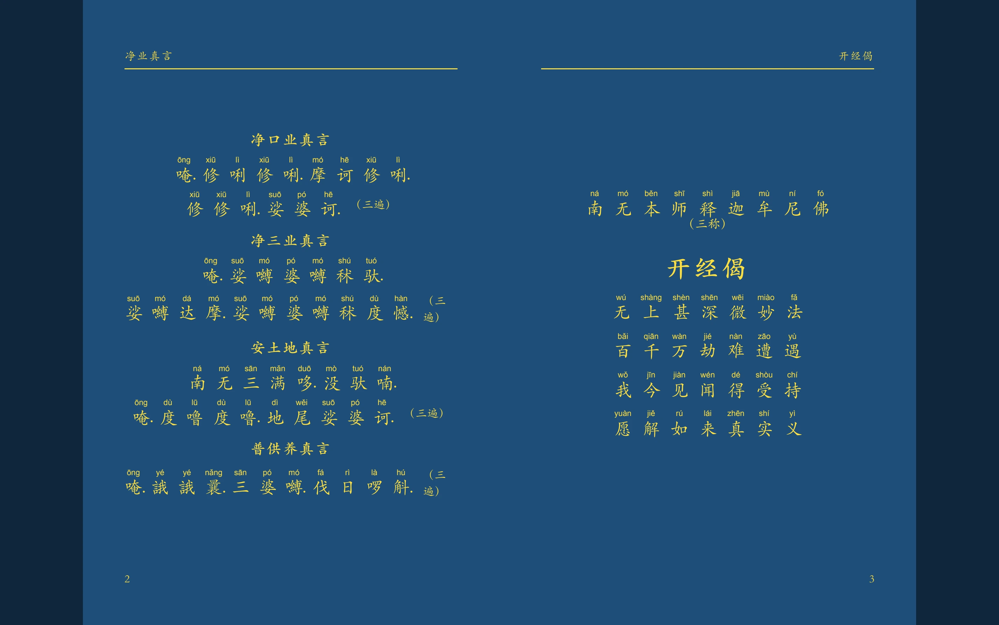
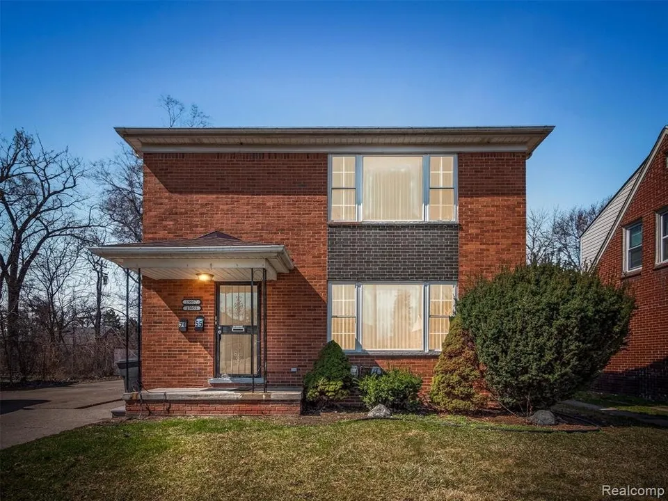

iPhone Duo · 交互式开合展台 (Product Viewer)
100% 完整复刻 Apple 官网首款折叠屏 iPhone Duo 核心交互。搭载官方同款 Detent Slider 触觉手柄，左右拖动平滑开合 0°~180° 机身。内置物理级钛金属光影、5 大预设姿态（闭合/帐篷/笔记本/书本/展开）、双配色漫游与电影级自动巡航，纯本地零依赖离线珍藏。
触觉手柄开合 · 3D WebGL 离线版
亲手开合探索 →

经典经折诵读典藏 · 大字拼音版（心经 / 能断金刚经）
严守大 32 开（140mm × 210mm）经典经折装开本与离散字位网格公理制作。正统佛门绀青宝蓝底、纯正泥金楷字与全拼音对位标注。收录玄奘三藏译本《般若波罗蜜多心经》与《能断金刚般若波罗蜜多经》两大诵读定本，支持沉浸翻页、三套经典配色、拼音显隐与送印级矢量 PDF 免扣下载。
玄奘译本典藏 · 纯正泥金绀青
在线诵读与下载 →

大兰辛（East Lansing / Okemos / Haslett）房产投资全景决策指南
30 套双重穿透核验优质标的 + 5 套避坑黑名单，涵盖四大价位梯度（<$150k 至 $400k+），穿透东兰辛 MSU 核心 Class IV 执照学生公寓、Okemos 顶尖学区豪宅翻新套利、Haslett 湖畔公寓及四单元多家庭。全真实照片与财务模型。
30 套精选标的 · 四大价位段
查看决策指南 →

大底特律法拍、拍卖与捡漏房产投资实勘指南
覆盖 Macomb、Wayne、Oakland 三县四大价位梯度（<$120k 至 $320k+）破产法拍、满租多家庭双拼（Duplex）、土地拆分套利与高息翻转（Flip）标的。全实拍图、官网直达外链、工程预算与核心风险穿透。
13 套高胜率标的 · 四大价位段
查看决策指南 →

TokNotch · 屏幕边缘 AI Token 账本指示器
把 tokscale 搬进刘海。常驻屏幕右侧或顶部硬件刘海，今日、本月与累计三环随时一瞥，模型分类、真实账本与订阅回本精准核算。
macOS 14.0+ · v1.0.0
获取与下载 →